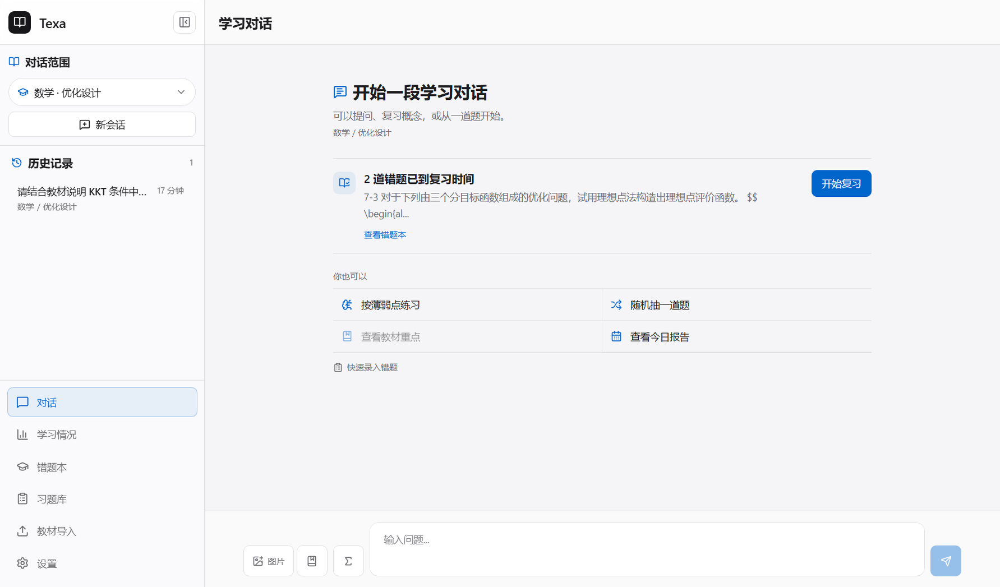
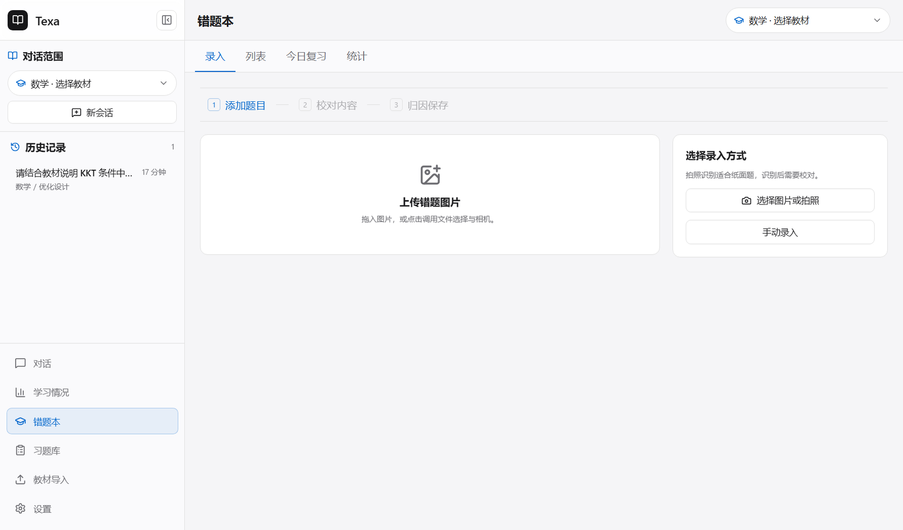
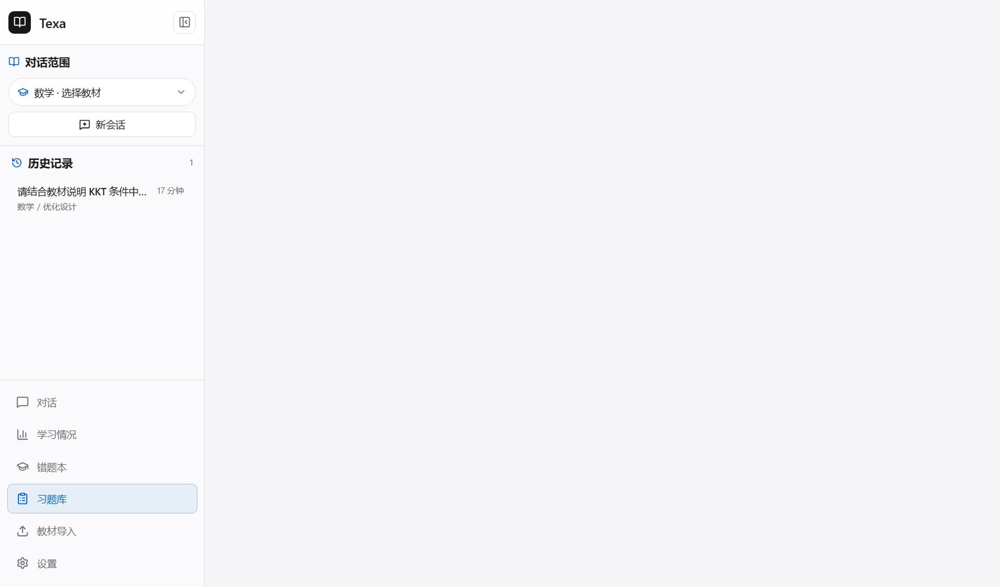
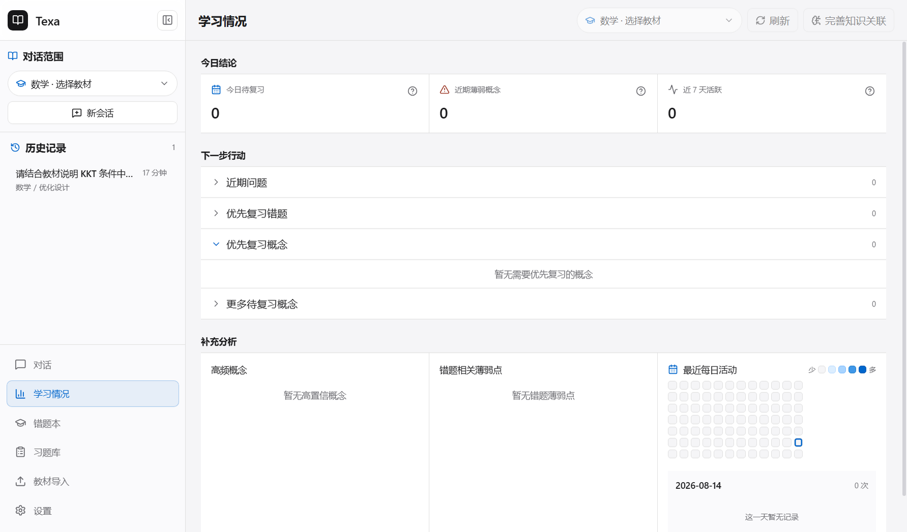

学习不该是碎片的堆叠。
教材、错题、概念、复习，各自为战的时候，它们只是分散的记录； 连成一条线的时候，它们才是一个人的学习线索。 这个工具做的是后者。 它把你的教材、练习与复习记录留在本机，让每一次问答都有来源可查， 让每一道错题都进入下一次复习。
学习档案默认保存在本机
教材索引、错题、习题与学习记录保存在本机；问答会把当前问题、必要会话上下文和选中的教材证据发送给你配置的 LLM 服务，Kimi 图片 OCR 会上传所选图片。离线时仍可查看本地资料与复习记录，但云端问答和 OCR 不可用。
每个结论都能回到出处
问答基于选定教材的证据生成，答案标注教材名、章节与页码。没有教材证据支撑的事实，会被明确拒绝而不是编造。
练习沉淀为下一次行动
错因、涉及概念与复习调度被记录下来。一次错误的练习，会变成到期队列里的一次复习。
一条从教材出发、又回到教材的线索。
系统围绕教材组织知识，问答指向教材，练习沉淀为错题，错题按间隔重复回到复习，复习再把你带回教材。每一步都是下一步的输入。
导入教材
本地 PDF 或 MinerU 解析结果，建立章节、片段与检索索引。
范围内问答
在学科与教材范围内混合检索，流式生成，答案保留来源。
练习与归因
题目进入习题库，错误答案、错因与来源沉淀为错题记录。
错题复习
SM-2 间隔重复调度到期队列，错因与薄弱点参与统计。
回到教材
复习时回到相关概念与例题，学习情况呈现概念接触与薄弱信号。
不是示意图，是正在运行的产品。
以下截图来自统一的 1440 × 900 视口与隔离演示数据。点击图片可放大查看原始尺寸。

带来源的问答，而不是"感觉像"的答案。
回答流式分阶段生成，公式用 KaTeX 渲染，教材来源以可读的章节与页码标注。检索异常时自动降级，不打断对话。
点击上方截图查看完整界面。

错因被记录，复习才有依据。
手动或 OCR 录入，识别结果必须经过人工校正。错因、涉及概念与 SM-2 间隔调度构成完整复习闭环。
点击上方截图查看完整界面。

从题目导入，到连续练习会话。
支持 Word、PDF 与教材抽题导入，保留来源、章节、题型与状态；练习会话可暂停、恢复并在重启后继续。
点击上方截图查看完整界面。

薄弱信号与复习队列，一目了然。
概念接触、错题薄弱点与到期复习队列被汇总到同一处。当日结论、建议行动与支撑分析层级清晰。
点击上方截图查看完整界面。
它擅长什么，边界在哪。
一个学习工具的价值不只在于它能做什么，也在于它清楚自己不做。下面的划分来自真实运行结果，不是宣传文案。
擅长 · 已实现
- 教材范围内的问答，混合检索 + 证据门禁 + 来源引用
- 错题录入、错因归因、SM-2 间隔复习调度
- 习题导入、练习会话与批量回滚
- 可视化数学公式编辑与 LaTeX / KaTeX 渲染
- 本地数据闭环与备份恢复、本地 API 安全边界
边界 · 依赖条件
- 回答、讲解与答案草稿需要自行配置 LLM
- 扫描件解析需要 MinerU，图片 OCR 需要 Kimi Vision
- 不依赖模型临场生成复杂计算题作为练习来源
- OCR 识别结果始终视为草稿，必须人工校正
- 当前为个人项目，持续开发中
仓库目前没有 LICENSE，内置教材与派生数据的公开分发授权也待确认。代码可公开查看，但不等同于已授予开源使用许可。这套工具的完整边界，你可以在仓库的审计记录里逐条核实。
学习工具的价值，
在于它陪你走完一整条线索。